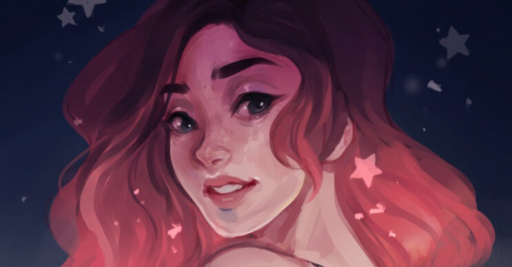

Cyarine¿Te imaginas verte retratada de una forma tan cool y dulce, como si fueras parte de un cómic o de una película animada de Disney? En estas ilustraciones, pertenecientes a Laura Brouwers, resaltan acciones o hechos que les suceden a las personas en su día a día. Además de realizar retratos de ella misma, algunas de cuerpo entero, también lo hace con otras personas por medio a través de su cuenta de Instagram, usando el hashtag #sketchmecyarine para identificar a la persona que dibujará. |
 |
|
Laura Brouwers, más conocida como Cyarine, es una artista de 19 años proveniente de Holanda. Trabaja a tiempo completo y de manera independiente en junto a su pareja realizando trabajos en base a diseño, ilustración y animación. En muchos de sus dibujos aparece ella en distintas situaciones: antes de ir a la escuela, de salir a pasear o de hacer alguna cosa que forme parte de la vida cotidiana de una joven artista, remarcando un estilo único y dulce. Además de poseer una cuenta en Instagram, Tumbler y Facebook donde muestra gran parte de su trabajo, esta joven cuenta también con un canal en YouTube donde muestra diversos vídeos time-lapse en los que brinda tutoriales de cómo realizar ilustraciones al mismo estilo como ella los hace. Además de ello, muestra el paso a paso de sus trabajos. Sin duda alguna, un gran trabajo que nos muestra que a partir del esfuerzo y las ganas por salir adelante, de manera independiente y a través de conocimientos básicos y simples de las redes, se pueden hacer grandes y entretenidas cosas cuando, siempre y cuando pongamos en marcha nuestras pasiones. |
|